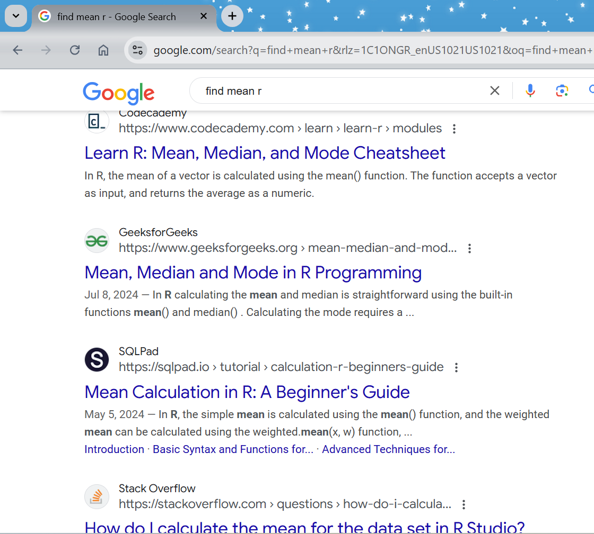
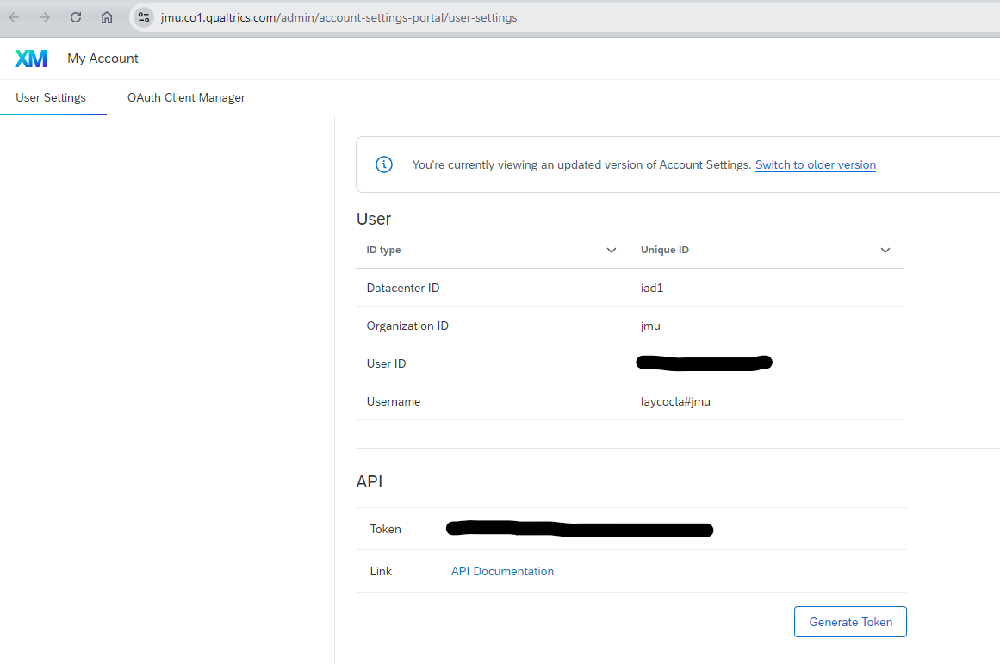

‘base’ R has quite a bit of functionality on its own
‘packages’ extend what base R can do
Specialized collections of functions (e.g. psych, lavaan)
Make data wrangling and visualization easier (e.g. tidyverse, ggplot2)
Advanced analysis (e.g. lme4, brms)
Installing and Loading Packages
#Install a package#Only need to do this once on any given machine#If you switch machines (e.g. office to home computer) you'll need to re-installinstall.packages("ggplot2")#Call the package#You will need to call your packages for each R sessionlibrary(ggplot2)
Installing and Loading Packages
#Handy to have a 'set-up' area at the beginning of your code#Load necessary packageslibrary(tidyverse)library(psych)library(car)#Then proceed with the rest of your code....
Second Survey Question
Feel free to be as honest or dishonest as you’d like here…
Syntax
(Source: “Columbus, C. (1990). Home Alone. Twentieth Century Fox”.)
Syntax
Like many things, an up-front investment of time can save a lot of time long-term
MANY available resources for code
Take and modify what you need
The Argument for Syntax
Let’s imagine two scenarios where you’re trying to describe your work: Do a tabset here
The Argument for Syntax
Documentation
Reproducability
Documentation
#Comments can tell you what you did#Or, what dataset you read in#Read in dataset Adata <-read.csv("groupA.csv")
Documentation
#Read in datatest_data <-read.csv("some/file/path.csv")#What does our data look like?head(test_data)#Take a peek at a variable#Check if any missing datatable(test_data$sp_2024, useNA ="always")#Two missing values#Remove them from the data - can only have complete cases heretest_data_clean <-na.omit(test_data)
Documentation
But, what if you had a different criteria? What if you only removed them if some other variable was above/below a certain value?
#Look for missing datatable(test_data_v2$major, useNA ="always")#Also see how these map togethertable(test_data_v2$sp_2024, test_data_v2$major)#Switching thing up this time#Get rid of missing for all rows unless major is BIOtest_data_clean_v2 <- test_data_v2[test_data_v2$major =="BIO"|!is.na(test_data_v2$sp_2024),]
Reproducability
#Read in datadata1 <-read.csv("some_data.csv")#Examine distributions#Pre firstggplot(data = data1) +geom_histogram(aes(pre))#Then postggplot(data = data1) +geom_histogram(aes(post))#Do a t-testt.test(data1$pre, data1$post, paired =TRUE)
Reproducability
#Read in datadata1 <-read.csv("different_data.csv")#Examine distributions#Pre firstggplot(data = data1) +geom_histogram(aes(pre))#Then postggplot(data = data1) +geom_histogram(aes(post))#Do a t-testt.test(data1$pre, data1$post, paired =TRUE)
Excel vs. R
Excel can hold a decent amount of data
Functions aid in data analysis
Pivot tables
Built-in data visualization
Excel vs. R
But…
How many times have you messed up an Excel sheet when trying to do an analysis and didn’t realize it until too late?
Excel vs. R
In Excel, you perform calculations and manipulations on your original dataset
Unless you save a copy!
With R, manipulations don’t affect the original dataset
This was mind-blowing to me
Available R Resources
A major benefit to R being open source: near infinite Google-ability
Many other free resources if you wanted to learn more
Can borrow code from other folks who have done it before
No need to reinvent the wheel
Available R Resources
Example: Google

Available R Resources
Example: YouTube
<www.youtube.com>
Available R Resources
Example: 605 stuff
Available R Resources
Example: GitHub
Available R Resources
Example: Giant repository of R books
Available R Resources
Example: R for Data Science book
Available R Resources
Example: GitHub for this presentation!
Example Use Case
Quick dive into some code, then we’ll come back up
Newer package: qualtRics
Allows you to pull survey data straight into R for analysis
Example Use Case
#Call the packagelibrary(qualtRics)#This is an initial set-up - only need to do once per machine!qualtrics_api_credentials(api_key ="YOUR_KEY_HERE", base_url ="URL.GOES.HERE",install =TRUE)
Example Use Case

Example Use Case
#See what surveys are associated with your account#Here, saving to an objectsurveys <-all_surveys()#We can see what the column names arenames(surveys)#And then see what surveys we havesurveys$name
Example Use Case
#See what surveys are associated with your account#Here, saving to an objectsurveys <-all_surveys()#We can see what the column names arenames(surveys)#And then see what surveys we havesurveys$name
Example Use Case
#See what surveys are associated with your account#Here, saving to an objectsurveys <-all_surveys()#We can see what the column names arenames(surveys)#And then see what surveys we havesurveys$name
#See what surveys are associated with your account#Here, saving to an objectsurveys <-all_surveys()#We can see what the column names arenames(surveys)#And then see what surveys we havesurveys$name